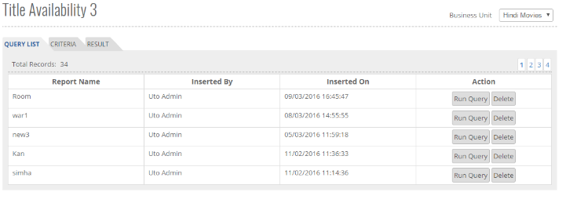

	<section>
		<article>
			<h2>Title Availability 3<span></span></h2>
			<div>
				<p></p>

				<p>This report focuses on the availability of Title for all regions based on Multiple user criterias. It will be used by Syndication team to know the availability of Title(s) in specific regions.</p>

				<p><b>Business Unit</b> - If there are multiple business units, then as per selection of Business unit, respective data will be generated.</p>

				<p>When user opens the report, Query list page is opened. It shows list of queries saved by particular user.</p>

				<div class="triangle-border top">				
					
				</div>

				<p>Here user can click on Run Query to run any saved query. To delete the query, click on Delete button.</p>

				<p>Next up is CRITERIA tab. User can select single or multiple criterias on this page. Once opened, it will look like this.</p>

				<div class="triangle-border top">				
					
				</div>

				<p><b>Title</b> - Availability results is based on Title selection. If no title is selected than result will be generated for all titles of the selected business unit. It is mandatory to select atleast one criteria among Title, Region and Platform.</p>

				<p><b>Period</b> - It has 3 options:</p>

				<p>1.<b>Minimum</b> - If this option is selected, it means user is searching for availability for minimum selected period. For Example, it user selects Start Date 20/3/2016 and End Date 21/3/2017, title with minimum availability from 20 March 2016 to 21 March 2017 will be displyed in result.

				<p>2.<b>Flexi Date</b> - Date is another filter provided to generate Availability Report as per user selection. Available from and To are used in Date search. Searching with flexi date means availability data will be populated in report even though there is 1 day of Availability of Title. By default Available from date is selected as current date. Selection Add 1 Year will add 1 year in From date. It is used in case of Flexi Date.</p>

				<p>3.<b>Fixed Date</b> - If Fixed Date is selected, it will populate data for title if it is available from provided start and end date. That means whole period has to be available for selected Title. It is mandatory to enter End date. Add 1 year option is not available for Fixed Date.</p>

				<p>Additional </p>

				<p><b>Title Language</b> - If user wants to generate availability for a title based on its Title Language, this option has to be selected.

				<p><b>Exclusivity</b> - This contains 3 options:</p>

				<p><b>Both</b> - For generating avail, Exclusive and Non Exclusive both will get considered.</p>
				<p><b>Exclusive</b> - Title with Exclusive availability will only be included in the result generation.</p>
				<p><b>Non Exclusive</b> - Title with Non Exclusive availability will only be included in the result generation.</p>

				<p><b>Sub Licensing</b> - Based on user selection of sub licensing, matching titles available with given sub licensing will get generated in the result.</p>

				<p><b>Restriction Remarks</b> - This option is selected by default. If user wants to see Deal remarks along with Title's Availability then the user should select the option and perform search. Report will be generated with Rights Restriction Remarks and Sub Deal Restriction Remarks.</p>

				<p><b>Other Remarks</b> - If user wants to see Deal remarks along with Title's Availability then the user should select the option and perform search. Report will be generated with Rights Restriction Remarks and Sub Deal Restriction Remarks.</p>

				<div class="triangle-border top">				
					
				</div>

				<p><b>Region</b> - This option is an additional refinement of search criteria using Country or Territory Group. If this option is not selected then report will be generated for all available regions.</p>

				<p><b>Exclusion</b> - This option will get activated only if Territory is selected. It means countries selected in this drop down will get excluded while generating availability.</p>

				<p><b>Exact Match and Must Have</b> - There are two more additional options in this report namely Exact Match Regions and Must Have. If user selects Exact Match Regions then result will only be generated when all the selected regions are available and if user selects Must have then user can select countries which must be considered while generating avail.</p>

				<div class="triangle-border top">				
					
				</div>

				<p>Platform has 2 options: Platform and Platform Group</p>

				<p><b>Platfrom Group</b> - Groups of platforms defined in Platform Group master will get populated in drop down. User can select desired group and select platform accordingly.</p>
				<p><b>Platform</b> - User can select single or multiple platforms in platform tree.</p>

				<p><b>Exact Match and Must Have</b> - There are two more additional options in this report namely Exact Match and Must Have. If user selects Exact Match then result will only be generated when all the selected platforms which are available and if user selects Must have then those platforms must be considered while generating avail.</p>

				<div class="triangle-border top">				
					
				</div>

				<p><b>Subtitling Language</b> - This option is an additional refinement of search criteria using Subtitling language. User can select one or all the options to generate data for the selected option. Selecting at least one option is mandatory.  User can select a language or language group in the drop down and based on selection of Subtitling, result will be generated.</p>

				<p><b>Dubbing Language</b> - This option is an additional refinement of search criteria using Dubbing language. User can select one or all the options to generate data for the selected option. Selecting at least one option is mandatory. User can select a language or language group in the drop down and based on selection of dubbing, result will be generated.</p>
				
			</div>
		</article>
	</section>